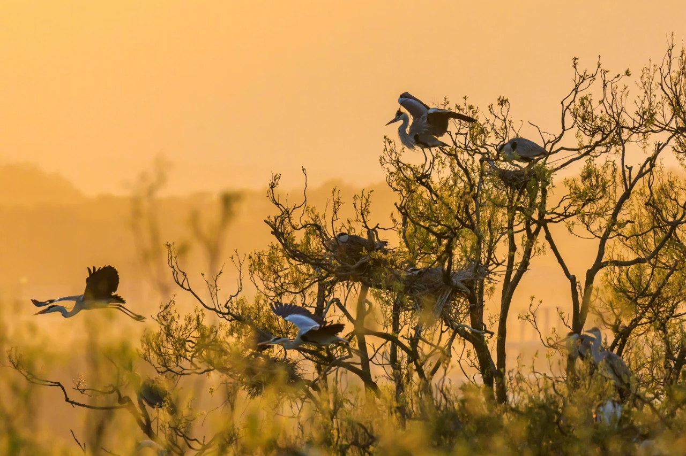
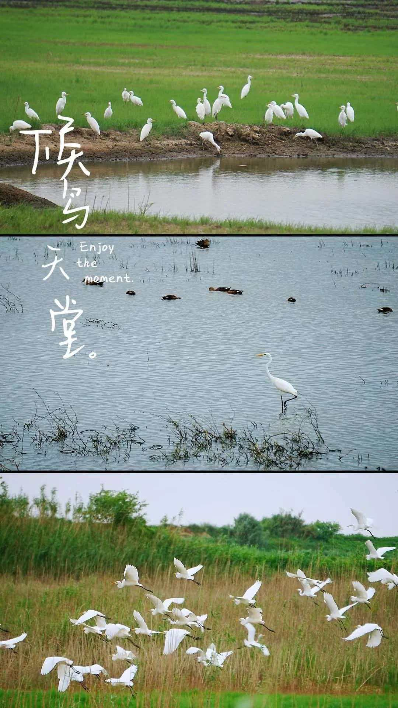

万物相连的生命之网
鄱阳湖湿地生态系统构建了一张复杂的生命之网。水生植物（苦草、苔草、马来眼子菜等）是初级生产者，通过光合作用将太阳能转化为有机物质。浮游动物、螺蛳、小鱼以藻类和植物碎屑为食，是初级消费者。候鸟处于食物链的中上端——白鹤以植物根茎为食，东方白鹳以鱼类为食，形成了多条相互交织的食物链。

鄱阳湖独特的水文节律——夏季丰水、冬季枯水——是维持湿地生态系统的关键。夏季丰水期，湖水上涨，淹没大片草洲，为鱼类提供了广阔的索饵场和产卵场。秋冬季节，湖水退去，草洲和浅水滩涂显露出来，沉水植物的根茎裸露，为越冬候鸟提供了丰盛的食物。如果这一水文节律被打破（如水库蓄水导致冬季水位过高），候鸟将面临食物短缺的困境。
候鸟是鄱阳湖生态系统的重要组成部分。它们通过取食水生植物根茎，促进了植物的更新生长；通过捕食小鱼小虾，调节了食物链的平衡；候鸟的粪便为湿地提供了天然肥料；候鸟携带的植物种子促进了湿地植物的传播。失去候鸟，鄱阳湖的生态系统将受到不可逆转的损害。
